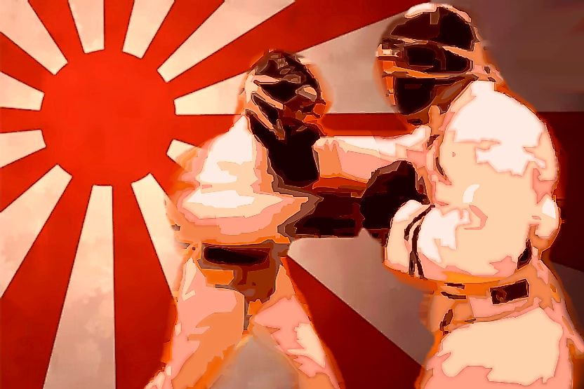
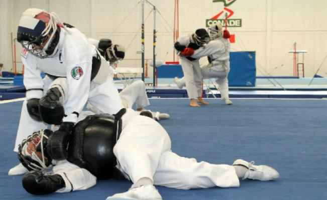

El Nippon kempo ("nihon kenpo"-日本拳法- escrito en japonés)
es un arte marcial japonés derivado del Sumai una técnica antigua
de la que proviene el Sumo actual entre otras, una de las más mortíferas
y eficaces artes marciales. Inicialmente se creó con la finalidad de
preservar la defensa y ataque en un combate real, pese a que muchas
disciplinas omitían los golpes reales en sus combates se hizo con
el fin de ser un estilo usado ampliamente .
Lema
"Nippon Kempo (nihon kenpo), es un camino de superación personal,
para crecer como ser humano y ser más fuerte. No sólo física, sino también
espiritualmente, encontrando así armonía con uno mismo y el universo."

¿Que se practica?
En los combates de Nippon Kempo se denota la contundencia y la
utilización de todo tipo de técnica marcial: golpes, patadas, rodillas,
llaves, proyecciones, pelea en el suelo, sumisión, etc.

Equpacion
En ésta disciplina es la armadura o Bogu la más destacada de sus
características ya que gracias a este es posible desarrollar un
entrenamiento y combate sin que los practicantes sufran lesiones
graves o permanentes (peto, careta, guantes especiales(bogu).